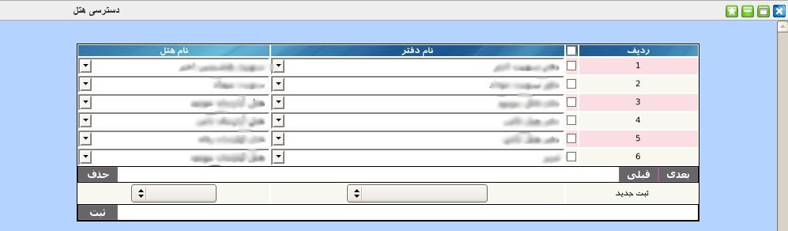

۱-دسترسی هتل
پنل دسترسی هتل, یکی از پنل های پایه است که به مدیریت این امکان تعریف دسترسی هر دفتر به هتل مربوط به خود را تعیین می کند. در این پنل ممکن است یک دفتر به چندین هتل و همچنین چندین دفتر به یک هتل دسترسی داشته باشد.

برای ثبت دسترسی جدید از قسمت پایین پنل می توانید نام دفتر و سپس نام هتل را انتخاب نمایید.
جهت ویرایش مقادیر هر آیتم بر روی آن کلیک نمایید و از منوی کشویی یک گزینه را انتخاب نمایید..
جهت حذف تکی هر آیتم, موس خود را بر روی شماره ردیف آیتم برده و بر روی لینک حذف کلیک نمایید.
جهت حذف گروهی آیتم ها, آیتم های مورد نظر را انتخاب و بر روی دکمه حذف کلیک نمایید.